Hrdina
Poloha · Pevné těleso · Ovládání
Úvod
Jan Matoušek · FIT ČVUT · 8. 10. 2026
Architektura, návrhové vzory, entity, kompozice a ECS.
Autorské ukázky kódu jsou fragmenty a pseudokód určené k výkladu. Nejsou vydávány za spustitelný projekt. Historická tvrzení zůstávají tvrzeními přednášky.
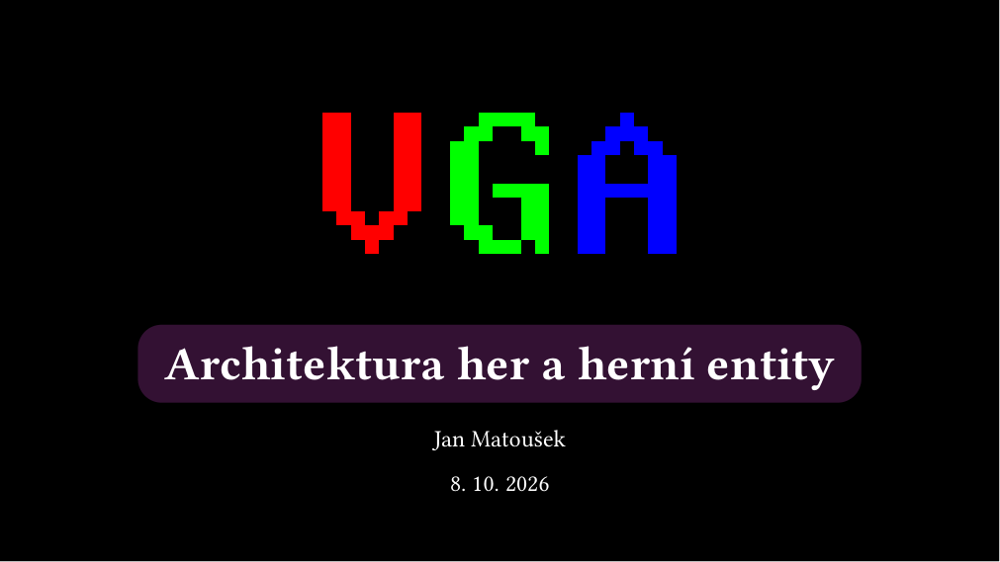
Jan Matoušek · Podklad a export 8. 10. 2026 · PDF, strana 1
Architektura
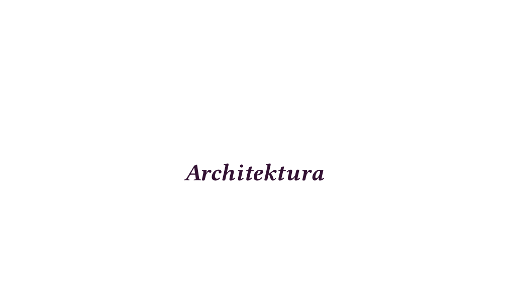
Jan Matoušek · Podklad a export 8. 10. 2026 · PDF, strana 2
Architektura
Může-li se něco pokazit, pokazí se to. – Edward Aloysius Murphy Jr.
The software needs to be built in such a way that it is able to adapt to unexpected changes in features. – Martin Fowler
Architektura software je promyšlený přístup k návrhu software, který umožňuje jej rozvíjet a reagovat na nečekané změny.
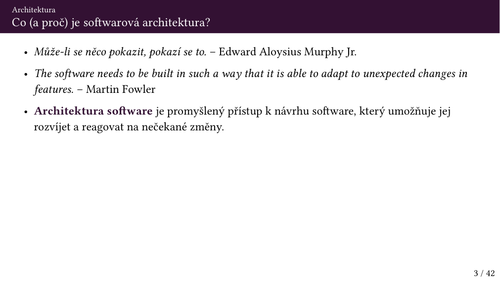
Jan Matoušek · Podklad a export 8. 10. 2026 · PDF, strana 3
Architektura
Obsah hry.
Herní mechaniky a systémy.
Zacílení hry (cílová skupina, způsob hraní hry).
Platformy, hardware, operační systémy, aplikační rozhraní.
Vývojářský tým, rozpočet na vývoj…
Volba nevhodné (nebo žádné) architektury prodraží implementaci změn.
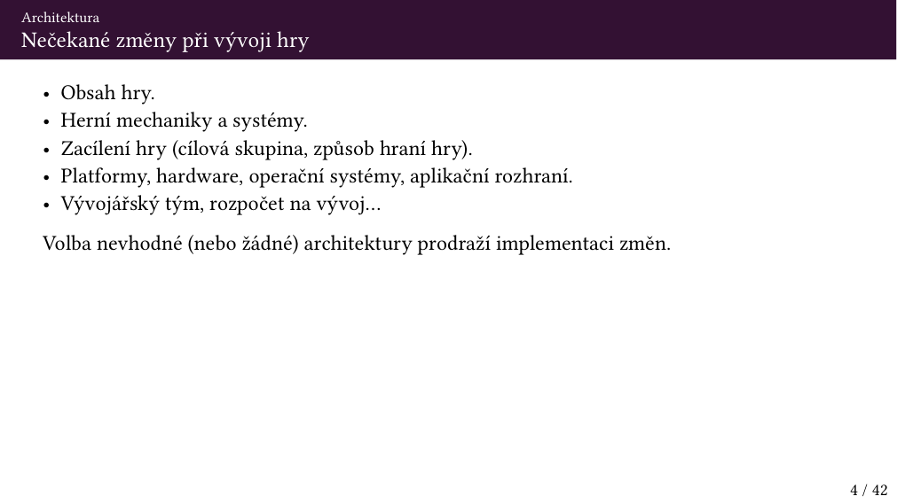
Jan Matoušek · Podklad a export 8. 10. 2026 · PDF, strana 4
Architektura
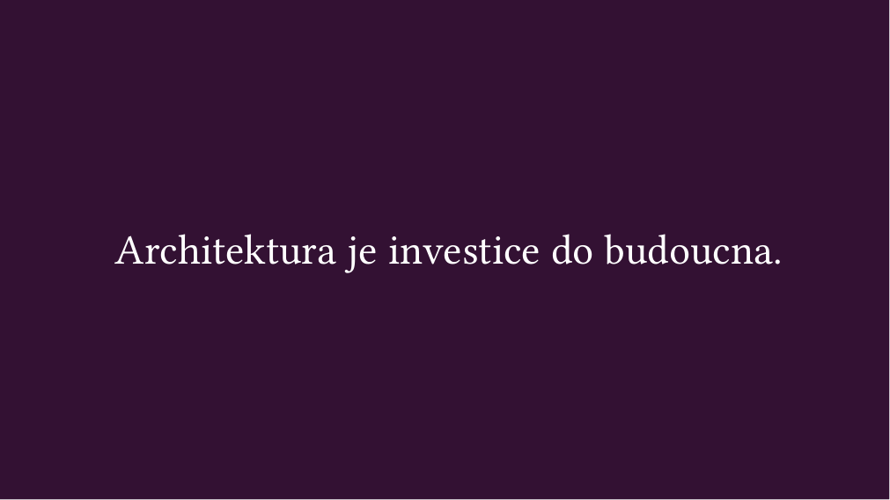
Jan Matoušek · Podklad a export 8. 10. 2026 · PDF, strana 5
Architektura
class OldSoldier : public NPC {
public:
OldSoldier() : NPC("Hans", 100, ...) {}
}NPC * old_soldier = new OldSoldier();Zvolíme vhodnou abstrakci a přesuneme detaily do datových souborů:
[ { type: "npc", source: "hans.json", pos: ... } ]
...
{ name: "Hans", hp: "100", ... }LoadSceneFromFile('level.json');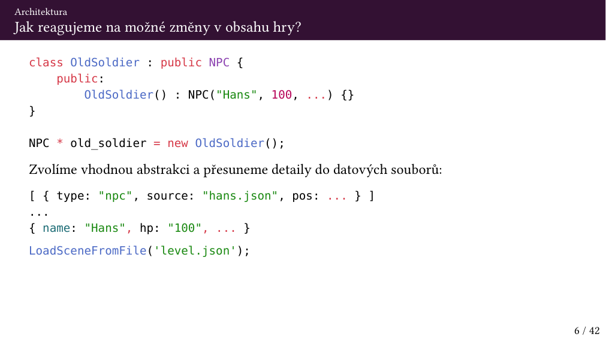
Jan Matoušek · Podklad a export 8. 10. 2026 · PDF, strana 6
Architektura
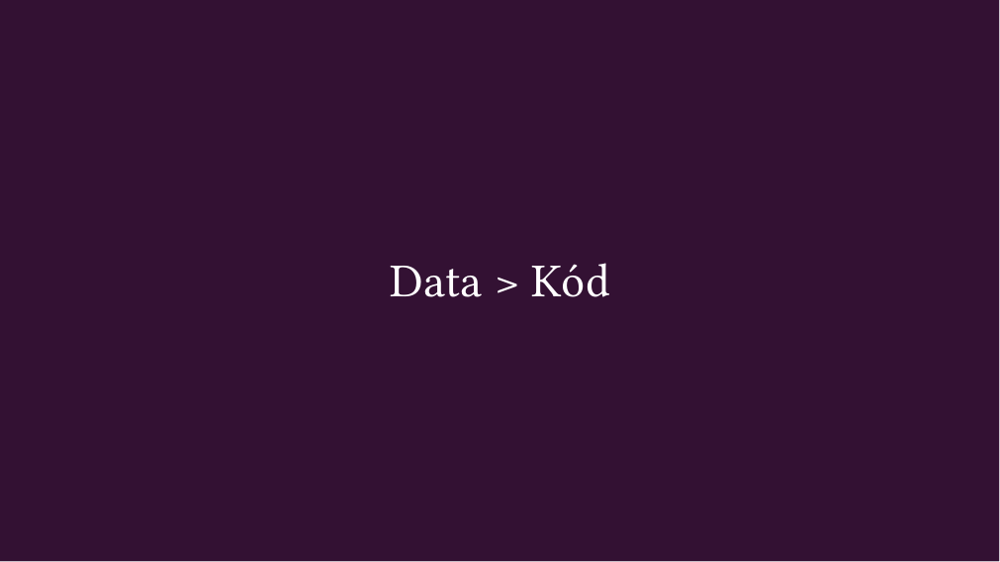
Jan Matoušek · Podklad a export 8. 10. 2026 · PDF, strana 7
Architektura
if(player_pressed_movement_keys()) {
move_player();
}
else if(player_pressed_light_switch) {
handle_light_switch();
}
else if ...Využijeme OOP, zavedeme moduly.
for(auto system : systems) {
system->tick();
}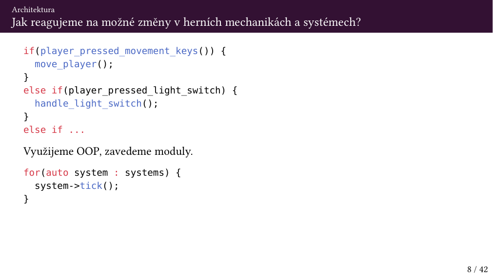
Jan Matoušek · Podklad a export 8. 10. 2026 · PDF, strana 8
Architektura
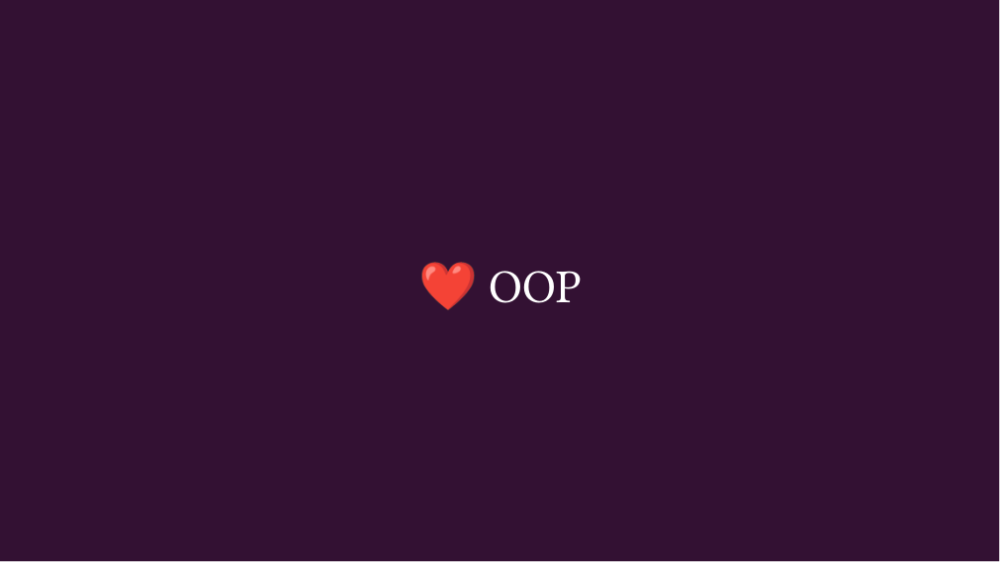
Jan Matoušek · Podklad a export 8. 10. 2026 · PDF, strana 9
Architektura
for(nYPos = 0; nHeight > nYPos; nYPos++) {
pAddress = (unsigned char *)(0xC000+((nY/8u)*80u)+((nY%8u)*2048u)+nX);
memcpy(pAddress, pSprite, nWidth);
pSprite += nWidth;
nY++;
}Zavedeme vrstvy / služby, které lze měnit.
auto drawing = Engine->GetDrawingService();
drawing->addSprite(...);
...
drawing->finish();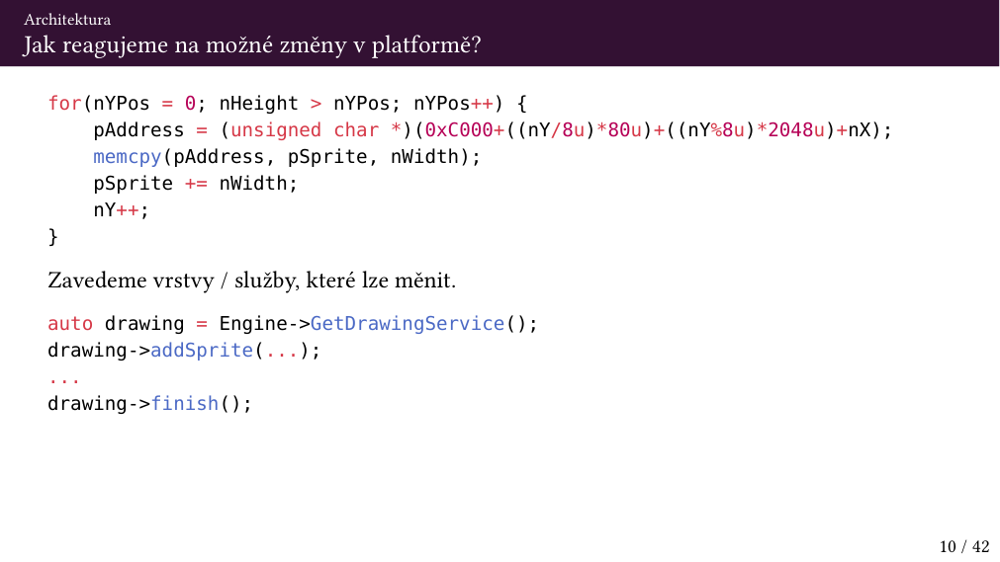
Jan Matoušek · Podklad a export 8. 10. 2026 · PDF, strana 10
Architektura
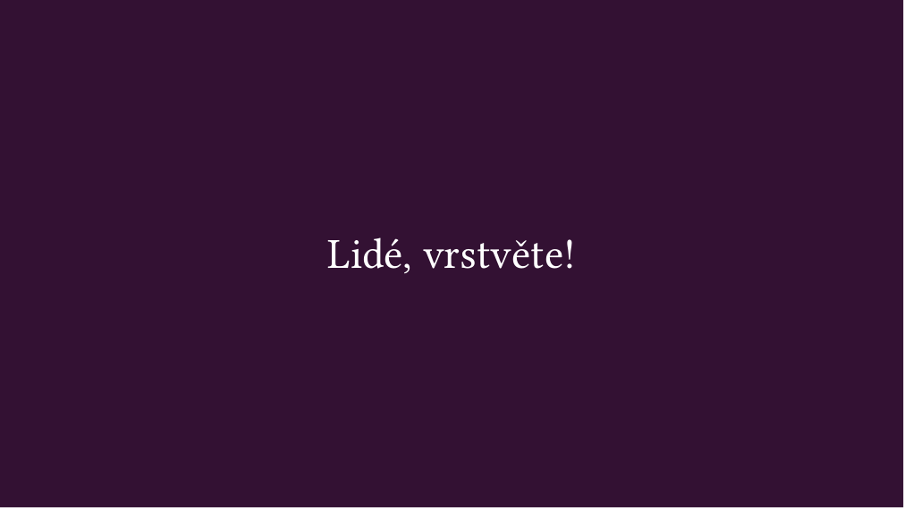
Jan Matoušek · Podklad a export 8. 10. 2026 · PDF, strana 11
Architektura
Typické rizikové situace:
Zdvojnásobení velikosti týmu.
Nečekaný odchod klíčového člena týmu.
Čitelný a přehledný kód (a nejen ten) je základ.
Dokumentace.
Nově příchozí vývojáři se potřebují zorientovat a co nejdříve začít pracovat.
Stávající vývojáři potřebují zaznamenat a vysvětlit svá rozhodnutí a různé podivnosti v kódu, datech, procesech, dokumentech…
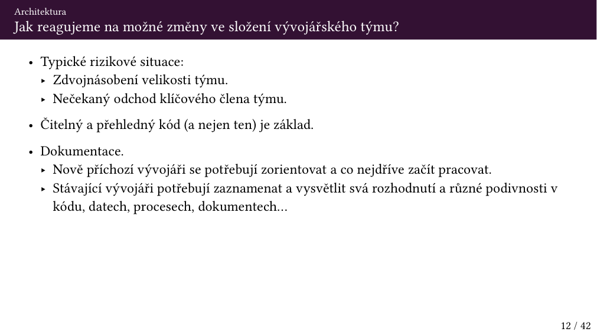
Jan Matoušek · Podklad a export 8. 10. 2026 · PDF, strana 12
Architektura
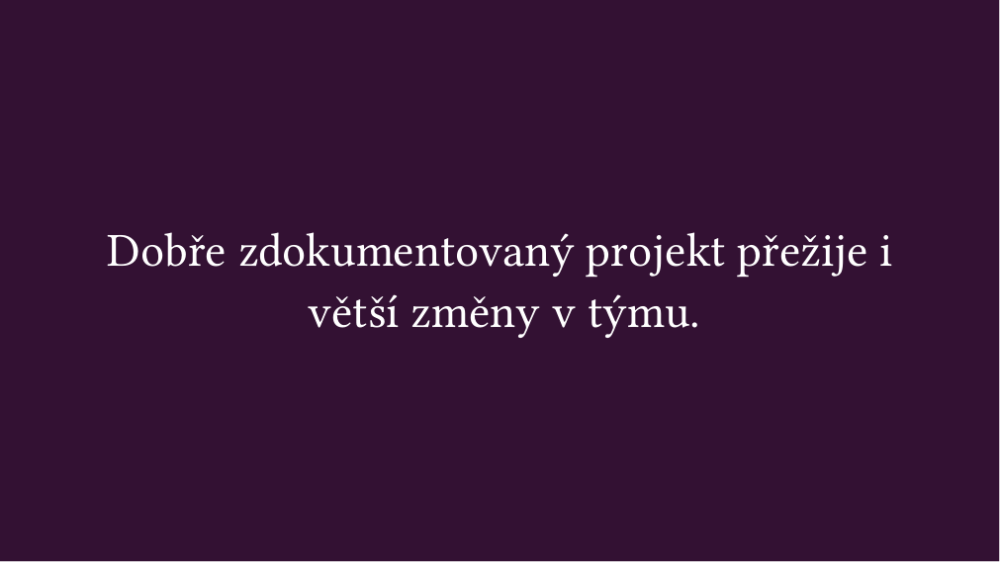
Jan Matoušek · Podklad a export 8. 10. 2026 · PDF, strana 13
Architektura
Každé architektonické opatření něco stojí a to, co získáme, nemusí vyvážit náklady.
Vytváření abstrakcí a datových formátů versus dělba práce.
Vytváření objektů a modulů versus jejich počet.
Vytváření vrstev versus režie komunikace mezi nimi.
Obsáhlost dokumentace versus pracnost její údržby.
Elegance versus run-time režie.
Neexistuje univerzálně vhodná architektura.
Pracujeme s omezeným prostorem nečekaných změn a architekturu volíme podle něj.
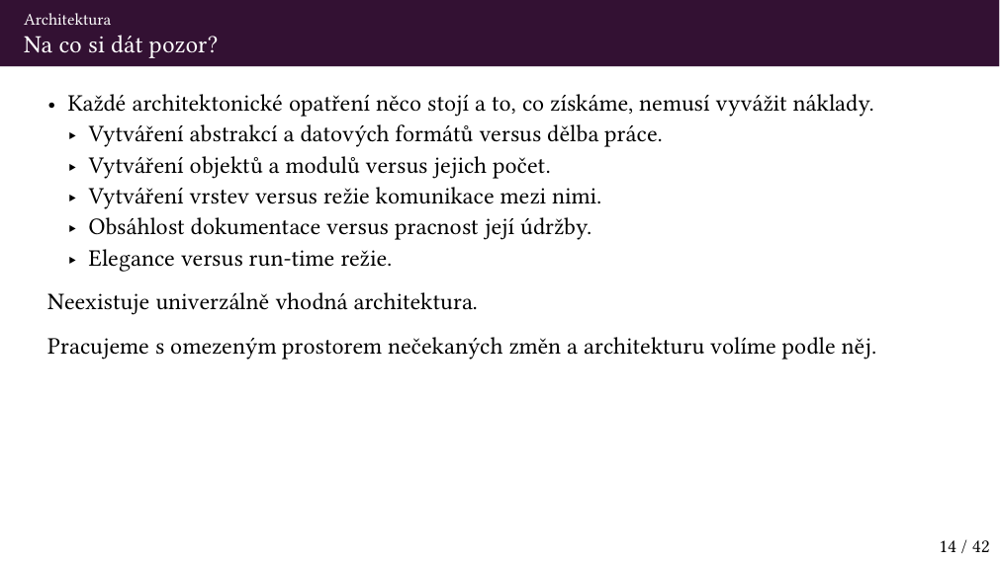
Jan Matoušek · Podklad a export 8. 10. 2026 · PDF, strana 14
Architektura
Živá databáze
Ve hře se nacházejí herní entity, které mohou vznikat a zanikat.
Tyto herní entity interagují mezi sebou.
Hra komunikuje s okolním prostředím, zejména s hráčem.
Hra = databáze + interakce + komunikační rozhraní.
Propojení služeb
Jádrem hry je její simulace.
Aby hra fungovala, potřebuje řadu podpůrných služeb.
Hra = simulace + služby (vykreslování, zvučení, vstup, síť, logování atd.)
K architektuře her jako celku se vrátíme někdy příště.
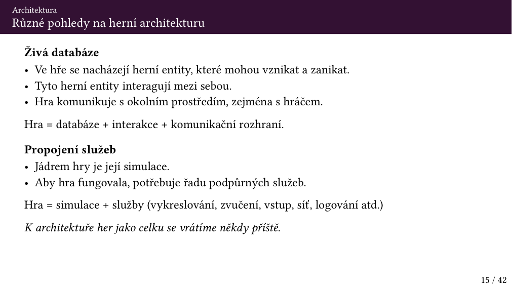
Jan Matoušek · Podklad a export 8. 10. 2026 · PDF, strana 15
Návrhové vzory
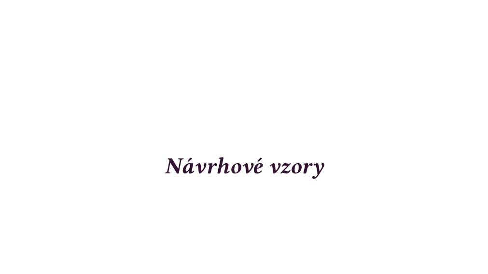
Jan Matoušek · Podklad a export 8. 10. 2026 · PDF, strana 16
Návrhové vzory
Obecné řešení problému využívané při návrhu počítačových programů.
Problémem se zde nemyslí algoritmus.
Typické řešené problémy:
Úspora kódu.
Čitelnost kódu.
Udržovatelnost kódu.
Rozšiřitelnost kódu.
Oddělení zodpovědností.
Úspora zdrojů počítače (procesor, paměť, datové sběrnice…).
Tyto problémy často nejsou zřejmé na začátku vývoje, chceme jim ale předejít.
Návrhové vzory vypozorovány v praxi a popsány jako good/best practices → rozšíření návrhových vzorů do praxe.
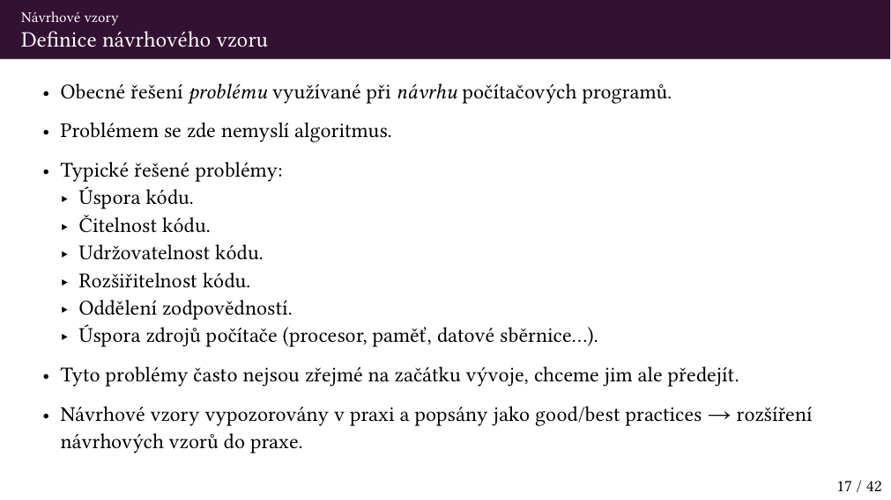
Jan Matoušek · Podklad a export 8. 10. 2026 · PDF, strana 17
Návrhové vzory
Pojem design pattern poprvé použil Christopher Alexander v 1966; avšak v kontextu architektury a urbanismu, nikoliv software.
Poprvé v kontextu software Ward Cunningham a Kent Beck, v 1987 na konferenci OOPSLA. Předpřipravené vzory pro začátečníky v jazyce Smalltalk.
V roce 1991 vznikla skupina Gang of Four (GoF) – Erich Gamma, Richard Helm, Ralph Johnson a John Vlissides.
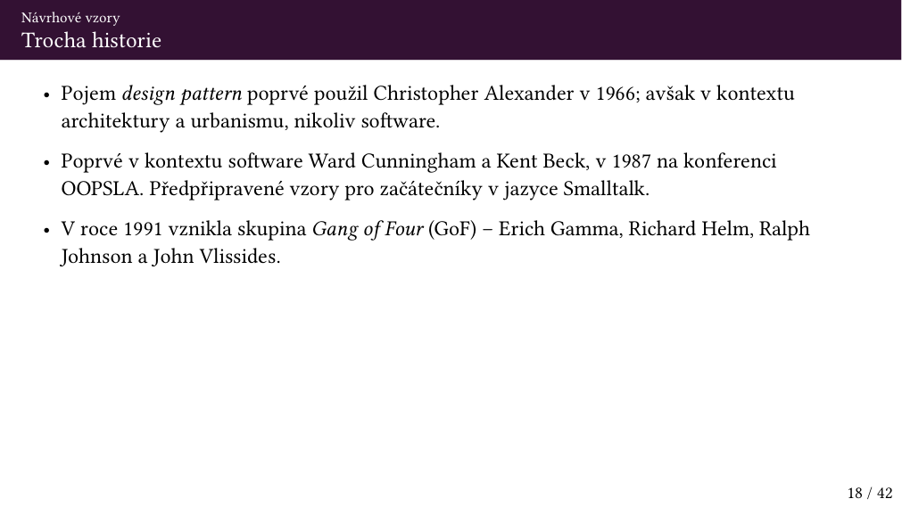
Jan Matoušek · Podklad a export 8. 10. 2026 · PDF, strana 18
Návrhové vzory
Název návrhového vzoru – jednoznačný název vzoru
Zařazení návrhového vzoru – creational, structural, behavioral, concurrency…
Cíl – kvůli čemu vzor vznikl
Další názvy – pod jakými dalšími názvy je vzor znám v praxi
Motivace vzoru – jaký problém vzor řeší
Použití – kontext použití vzoru
Struktura – grafické znázornění vzoru (typicky UML diagram)
Účastníci – třídy a objekty, které tento vzor používá
Spolupráce – popis, jak spolu účastníci komunikují
Důsledky – popis výsledků, vedlejších efektů a případných problémů plynoucích z použití
Implementace, ukázkový kód, příklady známých použití
Související vzory
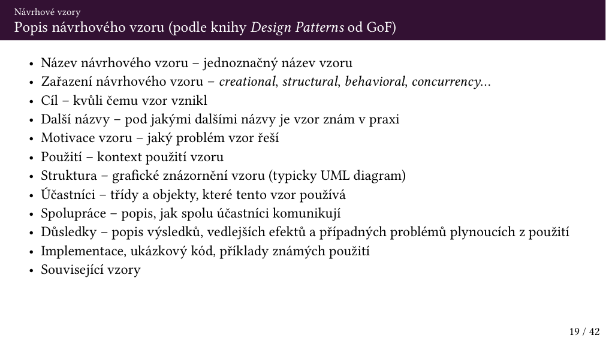
Jan Matoušek · Podklad a export 8. 10. 2026 · PDF, strana 19
Návrhové vzory
Gamma, Erich; Helm, Richard; Johnson, Ralph; Vlissides, John (1994). Design Patterns: Elements of Reusable Object-Oriented Software.
Buschmann, Frank; Meunier, Regine; Rohnert, Hans; Sommerlad, Peter (1996). Pattern- -Oriented Software Architecture, Volume 1: A System of Patterns.
Schmidt, Douglas C.; Stal, Michael; Rohnert, Hans; Buschmann, Frank (2000). Pattern- -Oriented Software Architecture, Volume 2: Patterns for Concurrent and Networked Objects.
Fowler, Martin (2002). Patterns of Enterprise Application Architecture.
Hohpe, Gregor; Woolf, Bobby (2003). Enterprise Integration Patterns: Designing, Building, and Deploying Messaging Solutions.
Freeman, Eric T.; Robson, Elisabeth; Bates, Bert; Sierra, Kathy (2004). Head First Design Patterns.
Nystrom, Robert (2014). Game Programming Patterns.
Předměty BI-SWI, BI-OOP, ANI-ADP.
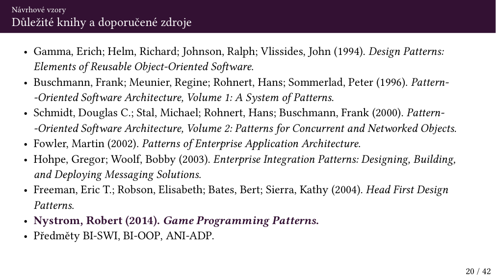
Jan Matoušek · Podklad a export 8. 10. 2026 · PDF, strana 20
Herní entity
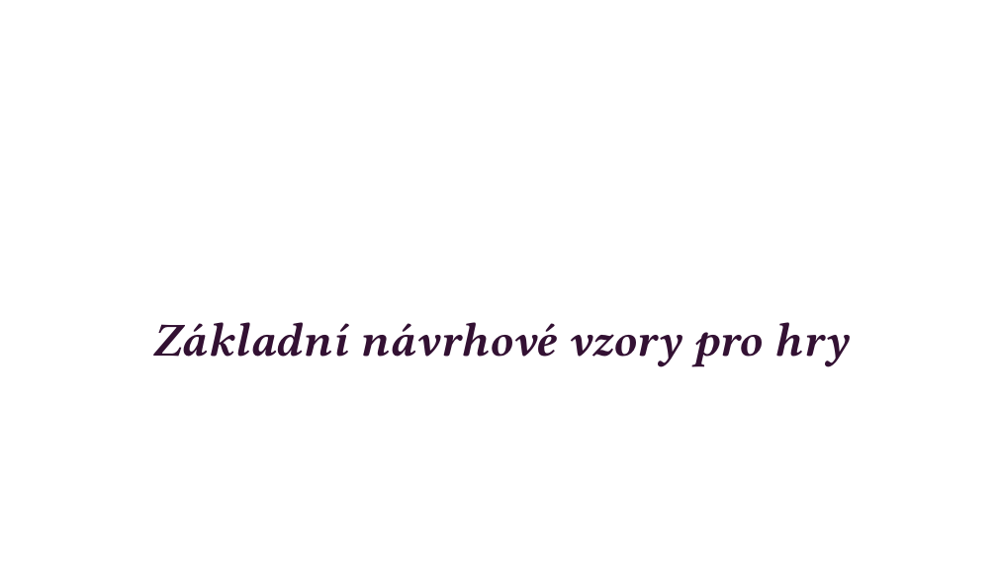
Jan Matoušek · Podklad a export 8. 10. 2026 · PDF, strana 21
Herní entity
void Game::run() {
while (true)
{
processInput();
update();
render();
}
}Přesná realizace tohoto vzoru závisí na použité platformě.
Jaké problémy má výše uvedený kód?
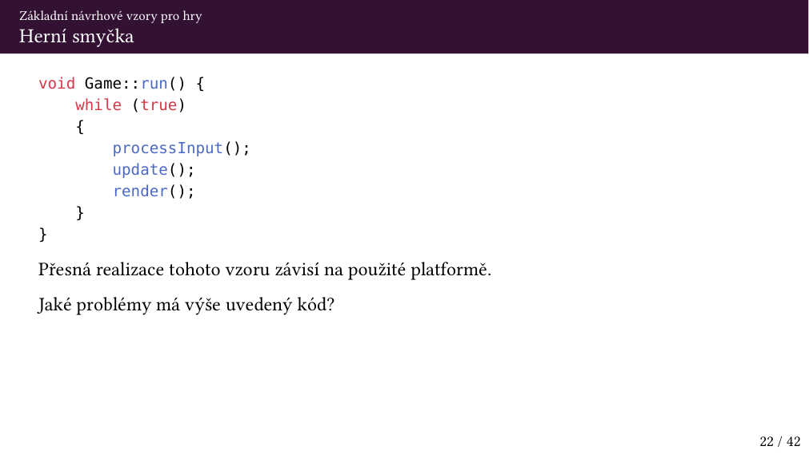
Jan Matoušek · Podklad a export 8. 10. 2026 · PDF, strana 22
Herní entity
Prostředí hry obsahující herní entity
Je oživena herní smyčkou
Entity můžeme reprezentovat různými způsoby (viz dále)
(Velmi) naivní příklad:
struct Ball {
int x, y, vx, vy;
};
struct Scene {
Paddle player, otherPlayer;
Ball ball;
ScoreDisplay scoreDisplay;
};Jaký má tento příklad problém a jaký problém by mohl řešit?
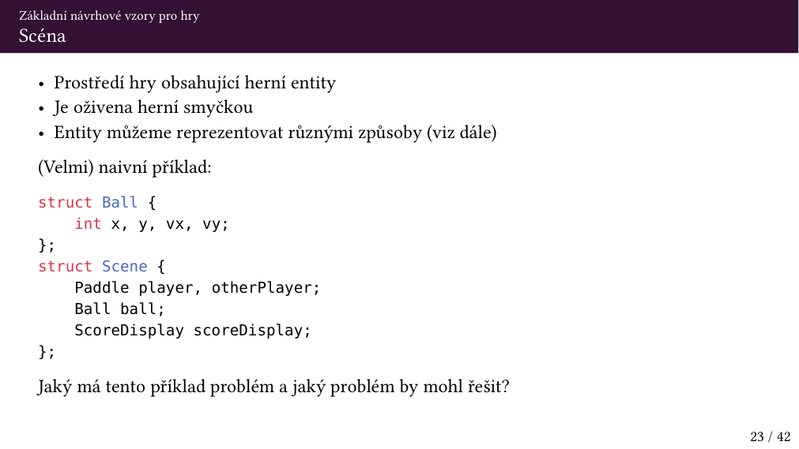
Jan Matoušek · Podklad a export 8. 10. 2026 · PDF, strana 23
Herní entity
class Scene {
public:
virtual void processInput() = 0;
virtual void update() = 0;
virtual void render() = 0;
}
void Game::run() {
while (true)
{
currentScene->processInput();
currentScene->update();
currentScene->render();
}
}Jak řešit přepínání scén? A jaké problémy přetrvávají?
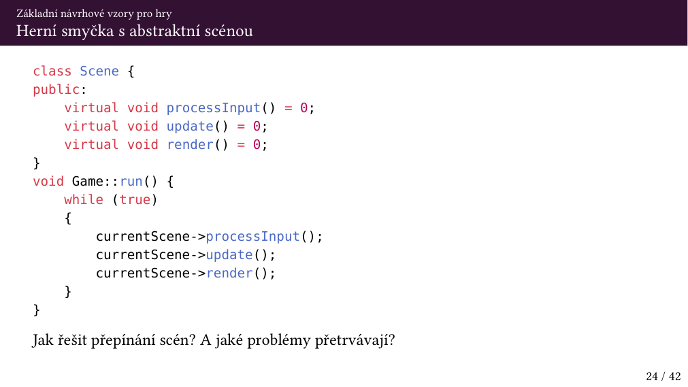
Jan Matoušek · Podklad a export 8. 10. 2026 · PDF, strana 24
Herní entity
class Entity { ... };
class Paddle : public Entity { ... };
class Scene {
std::vector<std::unique_ptr<Entity>> entities;
}Na entitách využíváme polymorfismus. Podle použitého jazyka může mít různou realizaci (dědičnost a virtuální metody v C++, enums a/nebo dyn traits v Rust, tagged unions a/nebo function pointers v C…).
Jaké vzniknou problémy?
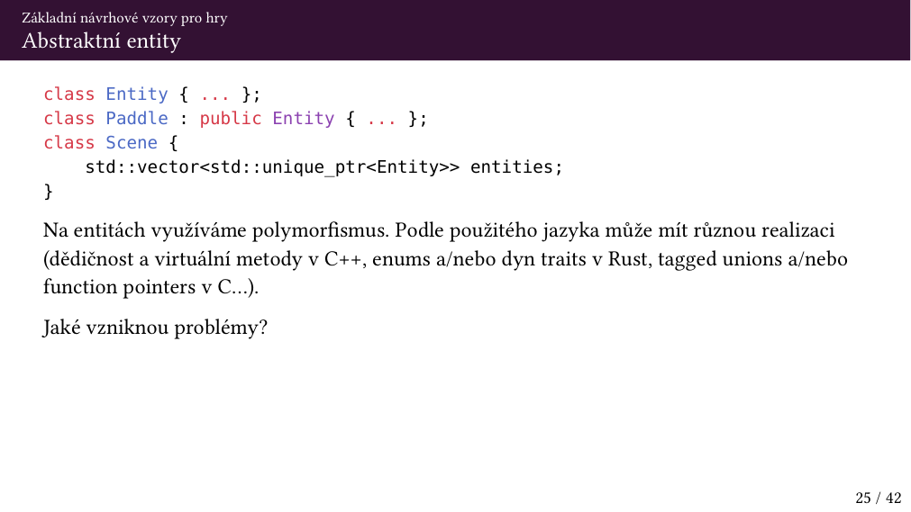
Jan Matoušek · Podklad a export 8. 10. 2026 · PDF, strana 25
Herní entity
for(auto & entity : entities) {
entity->draw();
}Rozpočet snímku (příklad):
16 ms celkem (60 fps)
10 ms vykreslování na GPU
5 ms simulace
1 ms režie engine
| Entit | Režie |
|---|---|
| 1 | 5 ns |
| 1 000 | 5 μs |
| 1 000 000 | 5 ms |
Existují různá řešení, lze je kombinovat.
Původní rozpočet 16 ms je zaokrouhlený příklad; přesná perioda 60 Hz je 16,67 ms. Uvedených 5 ns na volání je předpoklad ukázky, nikoli naše měření.
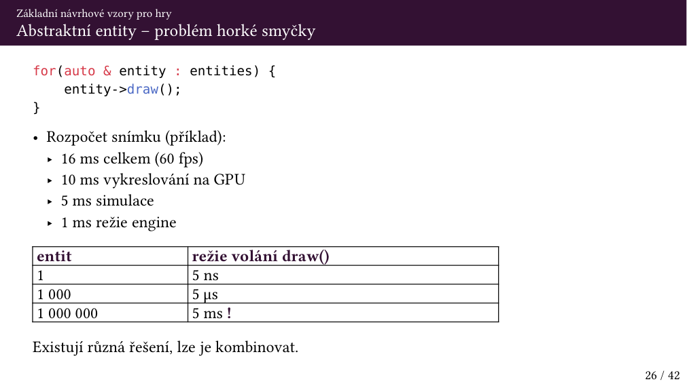
Jan Matoušek · Podklad a export 8. 10. 2026 · PDF, strana 26
Herní entity
Kam patří CDracula?
Pokud nás zradí dědičnost, zkusme kompozici.
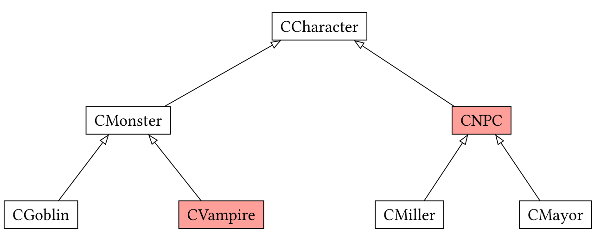
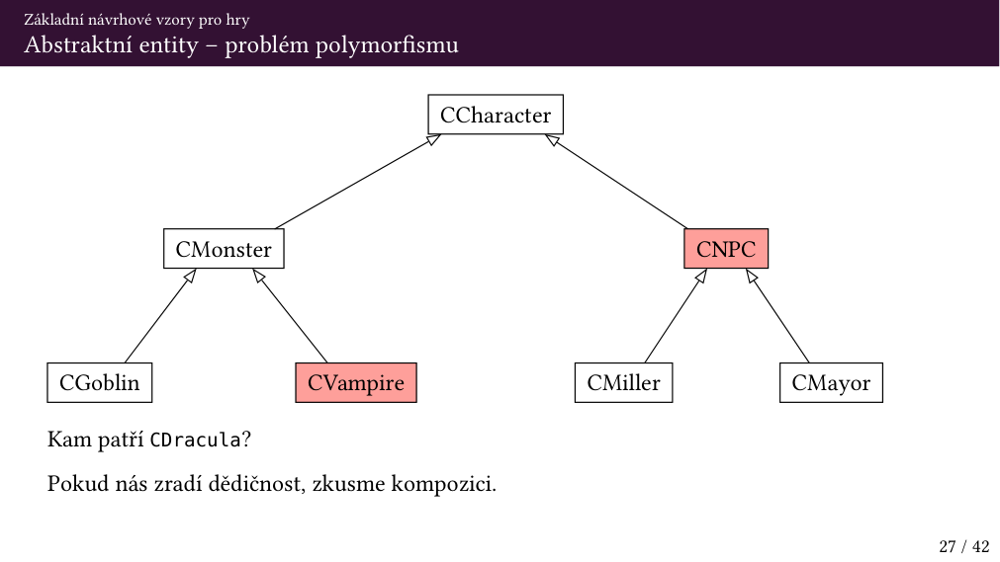
Jan Matoušek · Podklad a export 8. 10. 2026 · PDF, strana 27
Herní entity
Druhy entit jsou obecnější (nejsou zde druhy nepřátel apod.).
Dokumentace doporučuje využívat kompozici, ale je na vývojáři, jak si ji zařídí.
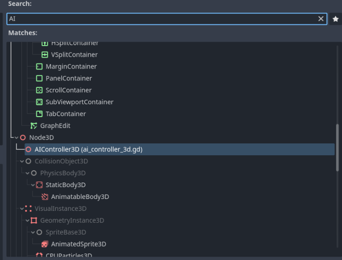
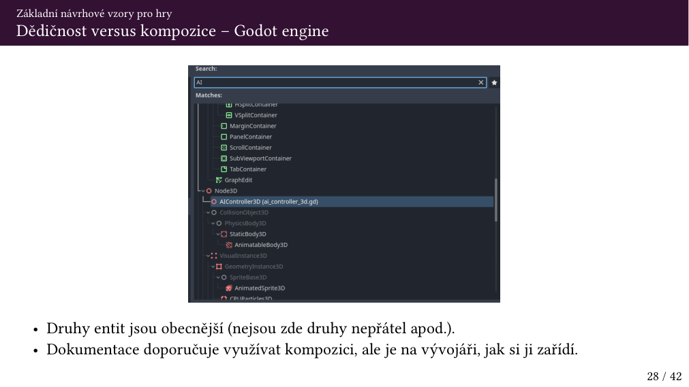
Jan Matoušek · Podklad a export 8. 10. 2026 · PDF, strana 28
Herní entity
Herní entity jsou složené z komponent.
Typické komponenty:
renderovatelný mesh,
fyzikální kolize,
poloha,
světlo,
…
programátorem dopsané chování
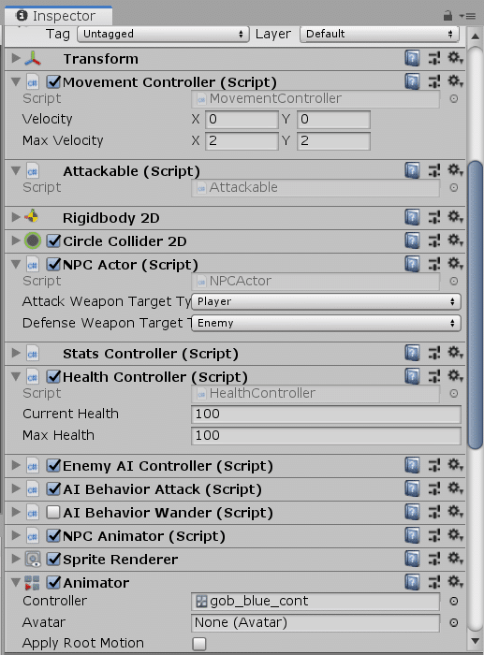
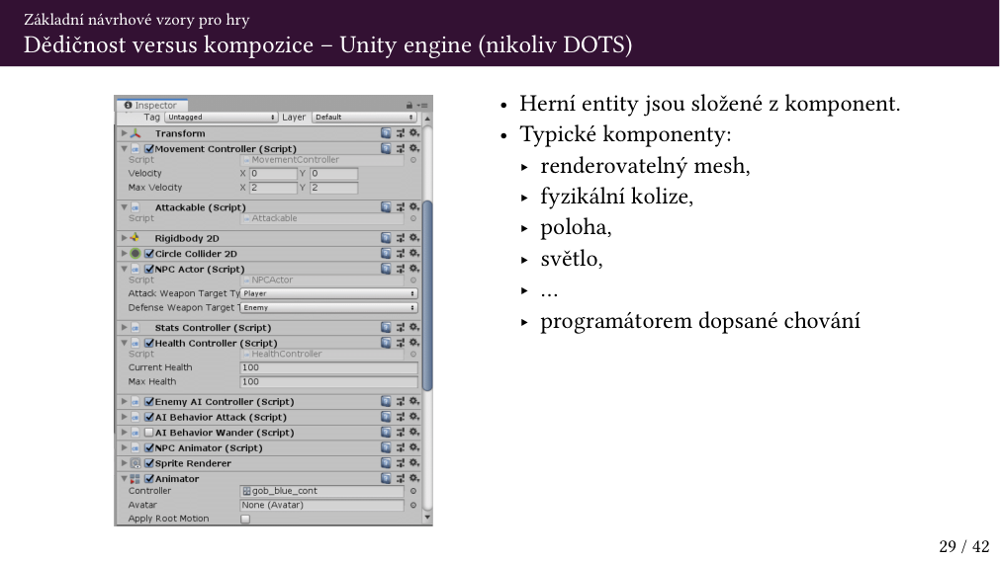
Jan Matoušek · Podklad a export 8. 10. 2026 · PDF, strana 29
Herní entity
class Component { ... };
class RenderableMesh : public Component { ... };
class Entity { std::vector<std::unique_ptr<Component>> components; };Problém? Dynamické vazby, pomalé dohledávání potřebných komponent.
class Entity {
std::unordered_map<std::type_index, std::unique_ptr<Component>> components;
template<typename A>
A& getComponent() { return dynamic_cast<A>(components.at(typeid(A))); }
};Problém (např. v Unity)? Zůstává míchání datových komponent a skriptů chování, skákání po ukazatelích (nelokalita paměti, častý cache miss), prostorová režie velkého množství hash map.
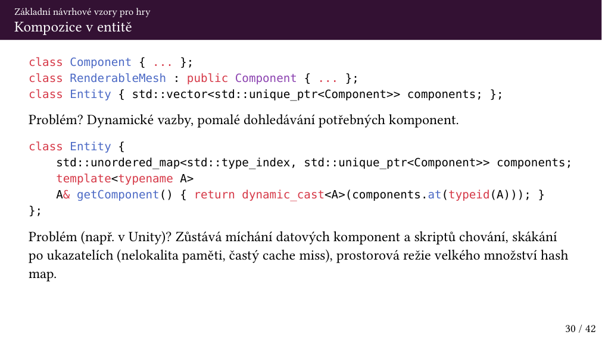
Jan Matoušek · Podklad a export 8. 10. 2026 · PDF, strana 30
Herní entity
Každá entita má sama o sobě pouze identifikátor (typicky celé číslo)
Data jsou v komponentách
Kód je v systémech
Každý systém oživuje 1 nebo více druhů komponent
Paralelizovatelné přes komponenty (1 vlákno zapisuje, nebo N vláken čte)
Paralelizovatelné na GPU (zejména zvládneme-li mít data některého druhu komponenty výhradně v paměti grafické karty)
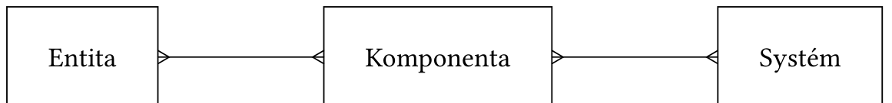
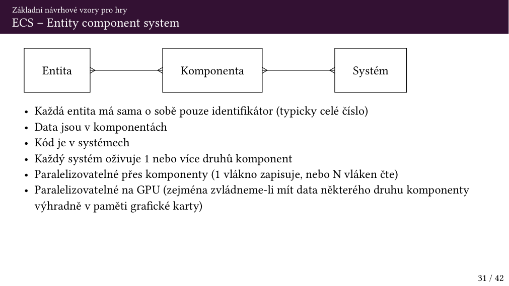
Jan Matoušek · Podklad a export 8. 10. 2026 · PDF, strana 31
Herní entity
1963, Ivan Sutherland, Sketchpad
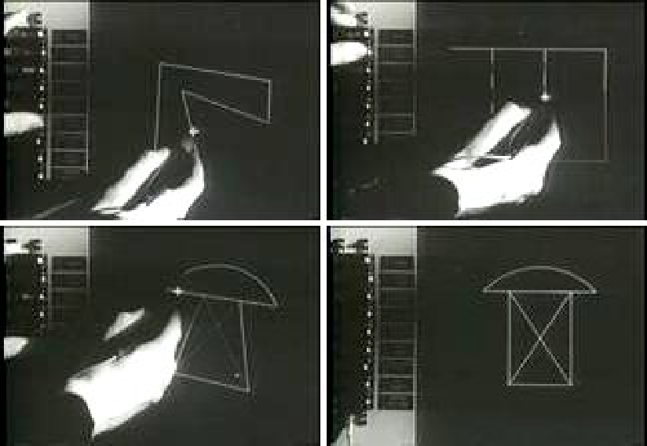
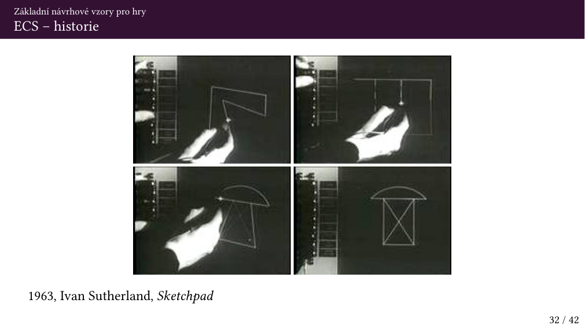
Jan Matoušek · Podklad a export 8. 10. 2026 · PDF, strana 32
Herní entity
První použití ECS v počítačové hře.
Na stejném engine následoval System Shock 2.
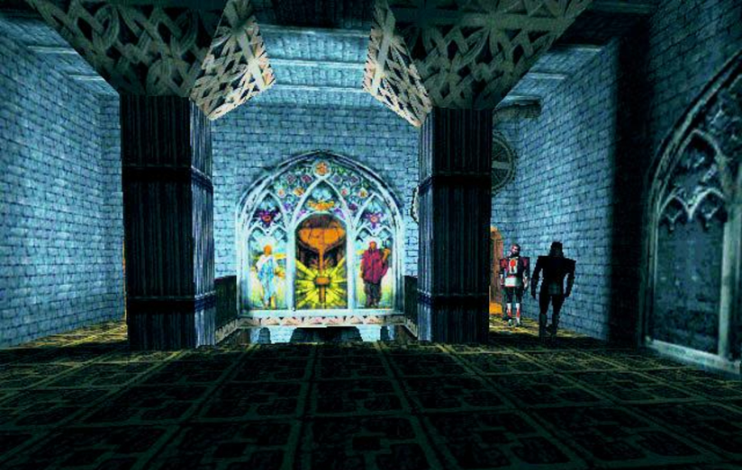
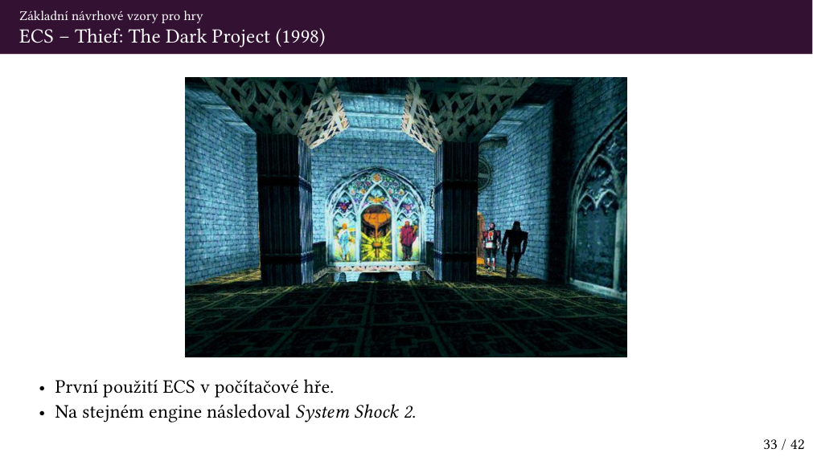
Jan Matoušek · Podklad a export 8. 10. 2026 · PDF, strana 33
Herní entity
Komponenty: poloha, světlo, pevné těleso, AI nepřítel, NPC, ovládání, quest…
Entity: hrdina, pochodeň, mlynář, quest unesené dcery, goblin, ohnivák, Dracula…
Systémy: fyzika, vykreslování, AI, vstup od hráče, questový systém…
Poloha · Pevné těleso · Ovládání
Poloha · Světlo
Poloha · Pevné těleso · NPC
Quest
Poloha · Pevné těleso · AI nepřítel
Poloha · Světlo · Pevné těleso · AI nepřítel
Poloha · Pevné těleso · AI nepřítel · NPC
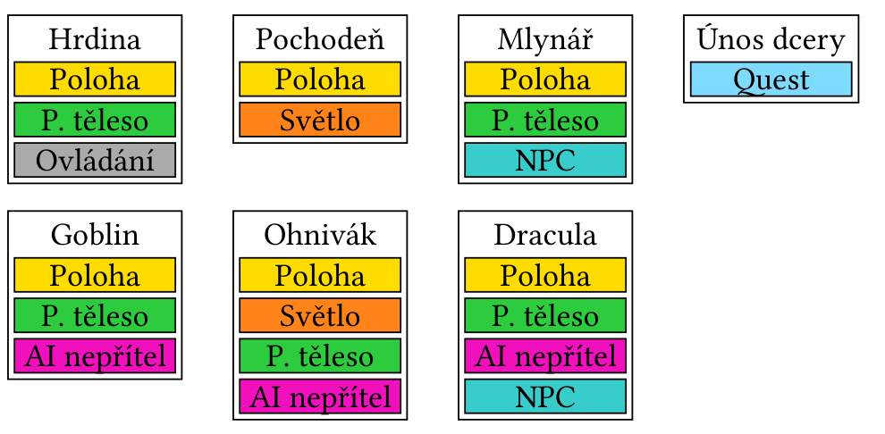
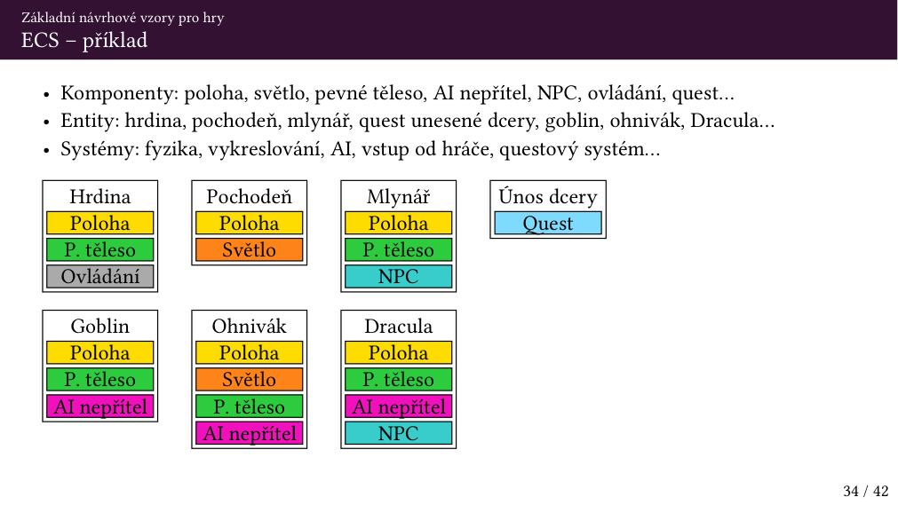
Jan Matoušek · Podklad a export 8. 10. 2026 · PDF, strana 34
Herní entity
Které komponenty používá který systém?
Poloha · Pevné těleso · Ovládání
Poloha · Světlo
Poloha · Pevné těleso · NPC
Quest
Poloha · Pevné těleso · AI nepřítel
Poloha · Světlo · Pevné těleso · AI nepřítel
Poloha · Pevné těleso · AI nepřítel · NPC
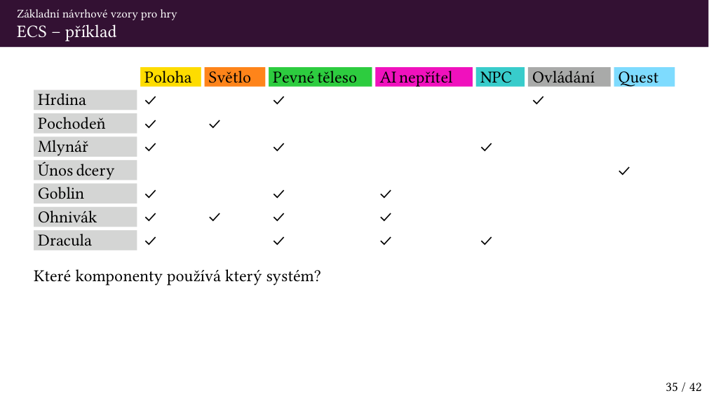
Jan Matoušek · Podklad a export 8. 10. 2026 · PDF, strana 35
Herní entity
Každý druh komponenty se nachází v samostatné mapě indexované identifikátorem entity.
std::unordered_map<int, Position> positions;
std::unordered_map<int, Light> lights;
...Každý systém potom prochází příslušné hash mapy, např.:
void lighting_system(...) {
for(auto & [ entity_id, light ] : lights) {
auto posIt = positions.find(entity_id);
if(posIt == positions.end()) continue;
auto & position = posIt->second;
...
}
}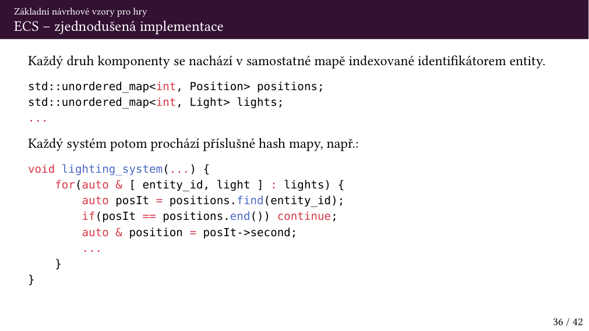
Jan Matoušek · Podklad a export 8. 10. 2026 · PDF, strana 36
Herní entity
Všechny hash mapy bývají v jednom registru komponent.
K procházení registru komponent se používají tzv. dotazy/pohledy (queries/views), které zpřehledňují různé požadavky systémů (typicky: potřebuji všechny entity, které mají komponenty A a zároveň B, potřebuji komponentu C od entity s daným identifikátorem atd.).
Příklady viz knihovny EnTT (C++), Bevy (Rust) a další.
struct position { float x, y; };
struct velocity { float dx; float dy; }void update(entt::registry ®istry) {
auto view = registry.view<const position, velocity>();
for(auto [entity_id, pos, vel]: view.each()) {
// ...
}
}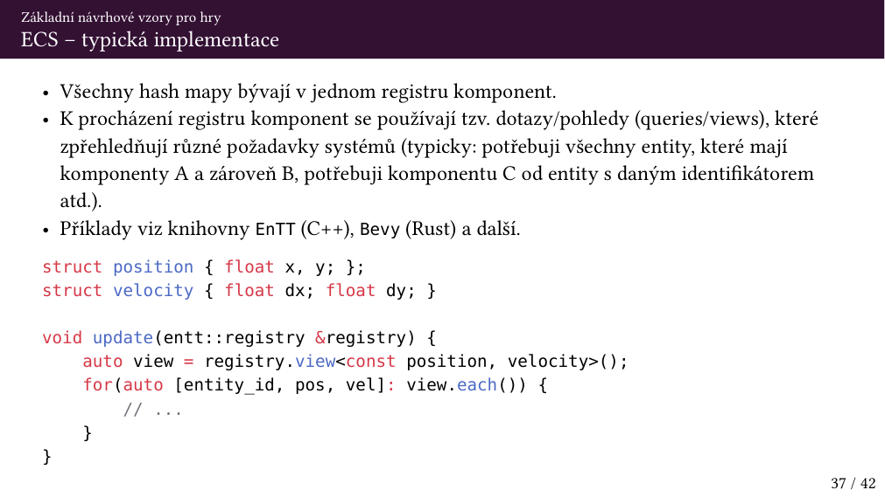
Jan Matoušek · Podklad a export 8. 10. 2026 · PDF, strana 37
Herní entity
Problém: Nehráčská postava přinese kufr,
položí jej na stůl a odejde.
V kufru jsou různé věci.
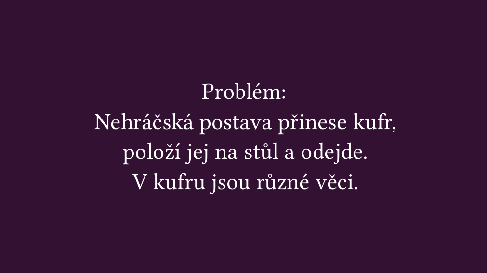
Jan Matoušek · Podklad a export 8. 10. 2026 · PDF, strana 38
Herní entity
Scéna může být poskládána z entit hierarchicky
Můžeme schovat entity, které jsou v hierarchii pod (předměty v kufru, interiér domu).
Umožňuje mít hierarchie transformací a pohybu.
Obvyklá reprezentace: odkazy na nadřazenou entitu.
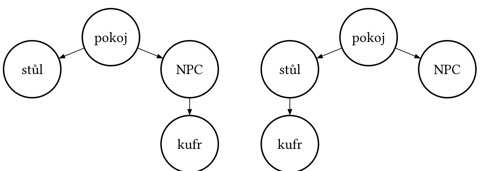
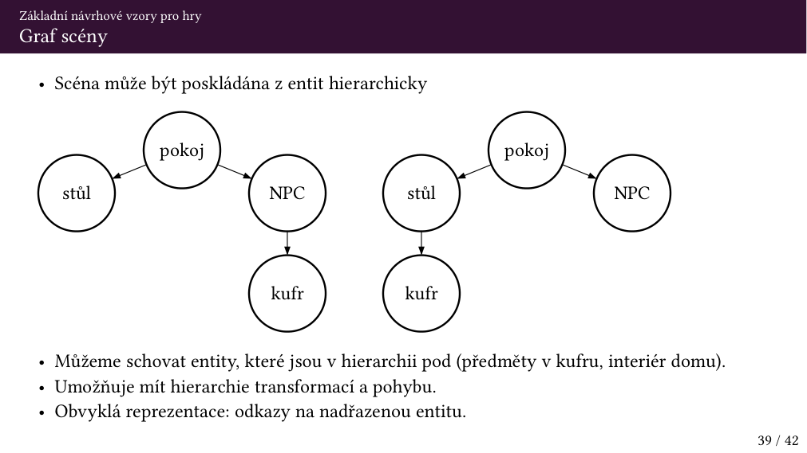
Jan Matoušek · Podklad a export 8. 10. 2026 · PDF, strana 39
Herní entity
Některé mechaniky vyžadují nalezení herních entit v blízkosti nějakých souřadnic.
Pro velké množství entit nebo velké množství hledání naivní postup nestačí – 𝑂(𝑛2)
Základní princip: Rozděl a panuj.
Existuje velké množství řešení:
Mřížky
Spatial hashing
Octree, quadtree
Bounding volume hierarchy
KD tree, BSP tree
Detaily necháme na jindy (přednáška o světech velkých a malých).
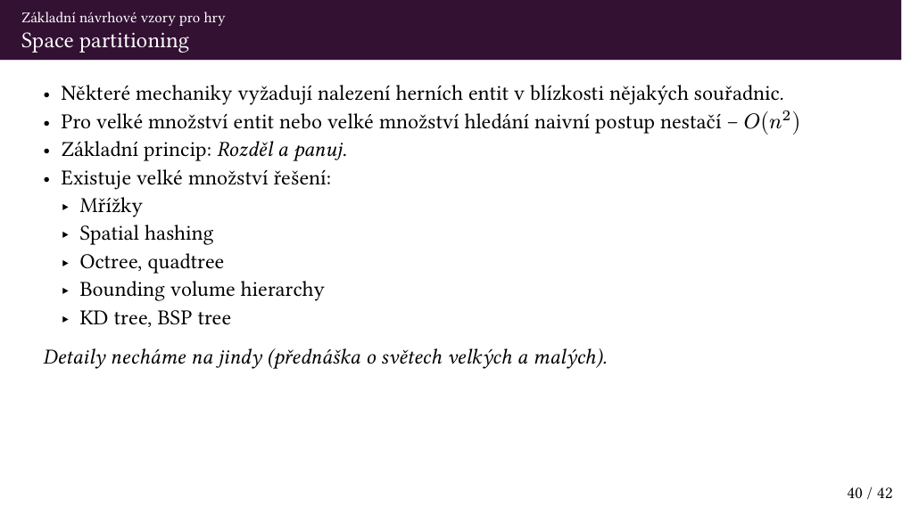
Jan Matoušek · Podklad a export 8. 10. 2026 · PDF, strana 40
Herní entity
Mohli bychom používat adresy / pointery. Problémy?
Invalidace odkazů při přesunech paměti (např. při realokaci pole).
Skákání po pointerech, časté cache miss.
Problematické určení platnosti, pokud odkazovaný objekt zanikne.
– Šlo by používat kombinace shared a weak pointerů.
Mít očíslované entity je pragmatičtější přístup.
Je potřeba řešit, zda řada čísel musel musí být souvislá.
Pokud ano, jak entity při změnách přečíslovávat.
Pokud ne, zda nám čísla rychle nedojdou.
S tím trochu souvisí object pooling (příště).
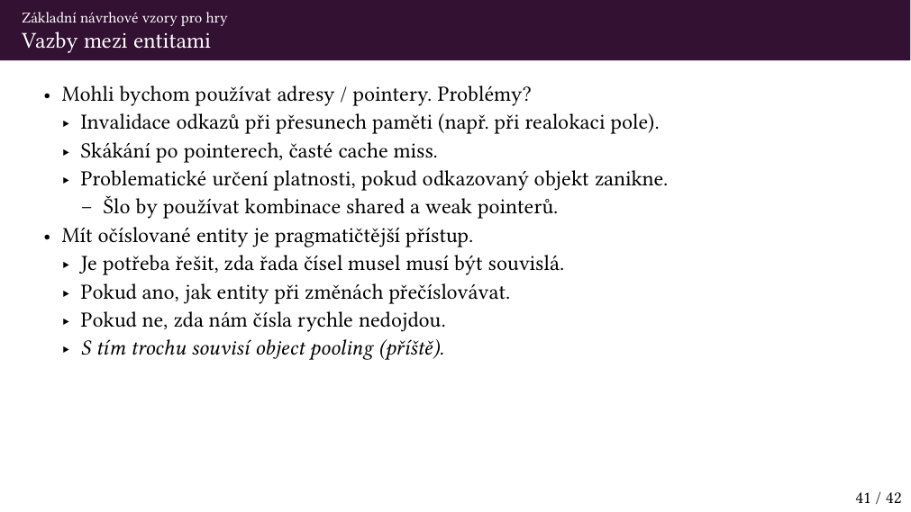
Jan Matoušek · Podklad a export 8. 10. 2026 · PDF, strana 41
Herní entity
Scéna je během hry málokdy statická, entity vznikají a zanikají.
Načtení / uvolnění levelu.
Spawning nepřátel, střílení a dopady projektilů…
Problémy se vznikem entit:
Přidělení identifikátoru, dynamická alokace, realokace polí…
Napojení vazeb
Výlučný přístup ke scéně, vhodný okamžik přidání
Zánik entit:
Zrušení vazeb
Výlučný přístup ke scéně, vhodný okamžik odebrání
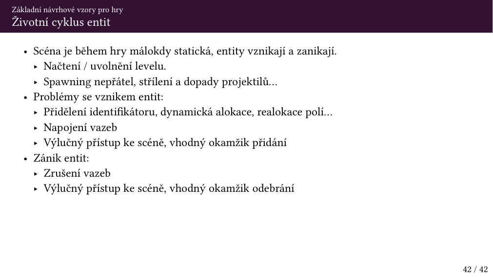
Jan Matoušek · Podklad a export 8. 10. 2026 · PDF, strana 42